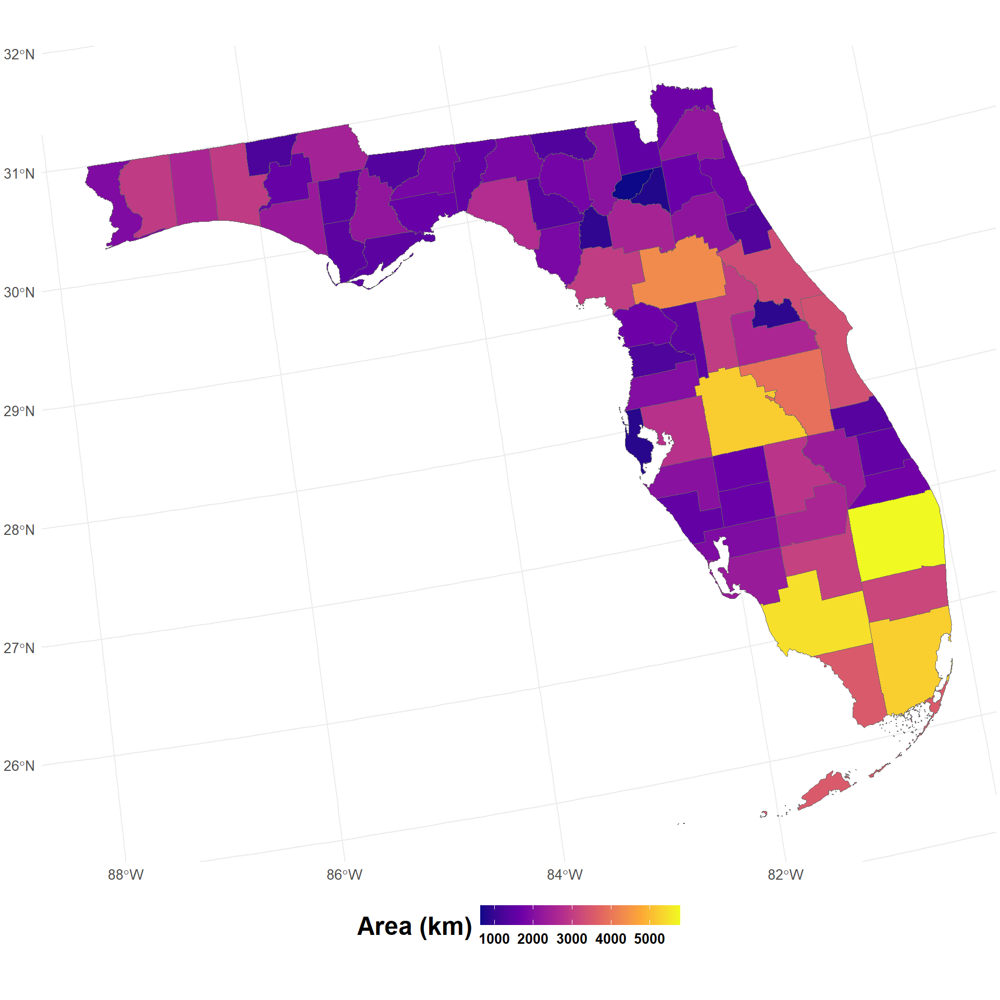
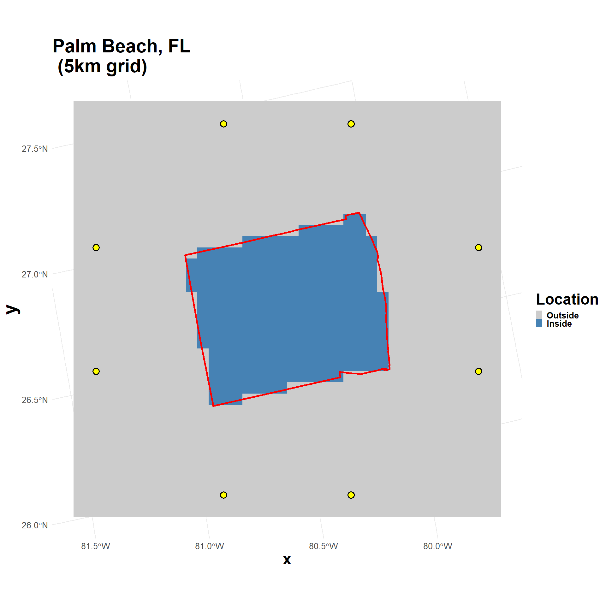

Demo of calculating county shape and landscape metrics
Overview
This script calculates a few landscape and patch metrics as a demonstration. In this demo, patches are individual Florida Counties and the landscape, or surrounding background matrix, is a grid. In addition to the patches and matrix, a few points around the periphery of the couny are shown; these represent seed location for simulations of disease spread.
The purpose is to show how different measures can be calculated that reflect county shape and position relative to simulations.
The first half of the script walks through spatial data manipulation to extract one county polygon, rasterize it, then calculate metrics. However, the last section uses the calc_county_metrics() function to iterate through all counties in Florida.
Libraries
Hide code
library(here) #directory managementlibrary(tidyverse) #data wranglinglibrary(tidyterra) # spatiallibrary(raster) # spatiallibrary(terra) # spatiallibrary(sf) # spatiallibrary(tigris) # county boundslibrary(viridis) # color rampsselect <- dplyr::select # conflictwith rasteroptions(dplyr.summarise.inform =FALSE)httr::set_config(httr::config(noprogress =TRUE))options(tigris_class ="sf", tigris_use_cache =TRUE,tigris_progress =FALSE) # to load spatial data using sf
Prepare County Data
Get County Boundaries
Load all US Counties then subset for demo:
Hide code
counties_sf <-suppressMessages(counties(cb =TRUE, progress_bar=FALSE))keep_states <-c("FL")counties_demo <-counties(state = keep_states, cb =TRUE)# how many counties?length(unique(counties_demo$COUNTYFP))
[1] 67
Project and Calc Area
Hide code
# US Atlas Equal Area: EPSG:9311counties_proj <-st_transform(counties_demo, 9311)# get crsr_crs_sf <-crs(counties_proj)# area in square kilometerscounties_proj <- counties_proj %>%mutate(area_km2 =as.numeric(st_area(geometry)) /1e6)
View Counties
Hide code
ggplot(data = counties_proj) +geom_sf(aes(fill = area_km2), color ="gray40", size =0.2) +scale_fill_viridis_c("Area (km)", option ="plasma") +theme_minimal() +theme(plot.margin =unit(c(0.1, 0.1, 0.1, 0.1), "cm"),legend.position ="bottom",legend.key.width =unit(2, "line"),legend.key.height =unit(1, "line"),legend.text =element_text(size =10, face ="bold"),legend.title =element_text(size =18, face ="bold"),axis.title.x =element_text(size =18, face ="bold"),axis.title.y =element_text(size =22, face ="bold"),axis.text.x =element_text(size =10, face ="bold"),axis.text.y =element_text(size =10, face ="bold"),plot.title =element_text(size =22, face ="bold"))

Create Grid
Hide code
# get largest countylargest_county <- counties_proj %>%slice_max(area_km2, n =1)# which county is it?largest_county$NAME; largest_county$STATE_NAME
class : SpatRaster
dimensions : 37, 38, 1 (nrow, ncol, nlyr)
resolution : 5053.752, 5054.088 (x, y)
extent : 1849779, 2041822, -1907533, -1720532 (xmin, xmax, ymin, ymax)
coord. ref. : NAD27 / US National Atlas Equal Area (EPSG:9311)
Create Seed Locations
Arbitrary selection of regualrly spaced point locations around the raster. These are intended to represent seeding locations for disease spread simulations.
Rasterize the largest county to check results. The grid was constructed based on the largest county, so all other counties should fit within it. The yellow points represent seeding/introduction locations for disease spread simulations.
Hide code
palm_bch_fl <-rasterize(vect(largest_county), r_template, field =1, background =0)grid_df <-as.data.frame(palm_bch_fl, xy =TRUE, na.rm =FALSE)names(grid_df) <-c("x", "y", "value")grid_df$value <-factor(grid_df$value,levels =c(0, 1),labels =c("Outside", "Inside"))# as sflargest_sf <-st_as_sf(largest_county)ggplot() +geom_tile(data = grid_df, aes(x = x, y = y, fill = value)) +scale_fill_manual("Location", values =c("Outside"="gray80", "Inside"="steelblue")) +geom_sf(data = largest_sf, fill =NA, color ="red", linewidth =1) +geom_sf(data = sim_origin_pnts, color ="black", fill ="yellow", shape =21, size =3, stroke =1) +coord_sf(crs =st_crs(largest_sf)) +theme_minimal() +theme(plot.margin =unit(c(0.1, 0.1, 0.1, 0.1), "cm"),legend.position ="right",legend.key.width =unit(0.5, "line"),legend.key.height =unit(0.5, "line"),legend.text =element_text(size =10, face ="bold"),legend.title =element_text(size =18, face ="bold"),axis.title.x =element_text(size =18, face ="bold"),axis.title.y =element_text(size =22, face ="bold"),axis.text.x =element_text(size =10, face ="bold"),axis.text.y =element_text(size =10, face ="bold"),plot.title =element_text(size =22, face ="bold") ) +labs(title ="Palm Beach, FL \n (5km grid)")

Metrics
Patch Metrics
The patch refers to the geometry (area, shape, perimeter length, etc…) bounded by the county polygon. These measures quantify patch shape and relative position in the grid.
Hide code
# get county geogeom <- sf::st_geometry(largest_county)[[1]]# ensure it's validgeom <- sf::st_make_valid(geom)# areaarea_vec_m2 <-as.numeric(sf::st_area(geom)) #m2area_vec_km2 <- area_vec_m2 /1e6#to km2# perimeter lengthperim_m <-as.numeric(sf::st_length(sf::st_boundary(geom))) # metersperim_km <- perim_m /1000# km# Polsby–Popper score (range 0-1, 1 is a perfect circle)compactness_pp <-4* pi * area_vec_m2 / (perim_m^2)# shape hull area (measure of shape irregularity, 1 indicates county matches convex hull)convex_hull_ratio <- area_vec_m2/as.numeric(sf::st_area(sf::st_convex_hull(geom)))# shape elongation (1 is a square, values greater scale relative to increased elongation)bb <- sf::st_bbox(geom)bbox_w <- bb$xmax - bb$xminbbox_h <- bb$ymax - bb$yminbbox_elongation <-pmax(bbox_w, bbox_h)/pmin(bbox_w, bbox_h)# centroid position relative to grid# measures centrality of county within grid#get county centercentroid <- sf::st_centroid(geom)centroid_xy <- sf::st_coordinates(centroid)[1, ]# get grid extentex <- terra::ext(palm_bch_fl) rel_centroid_x <- (centroid_xy[1] - ex[1]) / (ex[2] - ex[1])rel_centroid_y <- (centroid_xy[2] - ex[3]) / (ex[4] - ex[3])
Grid Metrics
Measures below based on the grid created with the county polygon (the patch). The term matrix refers to background points, i.e., outside the county and around the patch. These measures look at aspects of grid and cell geometry.
Hide code
# convert to raster formatr_rast <- raster::raster(palm_bch_fl)vals <- raster::getValues(r_rast)# 1 indicates cell is in county, everything else is NAvals_pres <-ifelse(!is.na(vals) & vals ==1, 1L, NA_integer_)raster::values(r_rast) <- vals_presres_m <- raster::res(r_rast)[1] # resolution in meterscell_area_m2 <- res_m * res_m # cell arearaster_cell_count <-sum(!is.na(raster::getValues(r_rast))) # pos cell countarea_raster_km2 <- (raster_cell_count * cell_area_m2) /1e6# area in km# ratio of county cels to background cellsmatrix_cell_count <-sum(is.na(raster::getValues(r_rast))) patch_matrix_ratio <- raster_cell_count/matrix_cell_count
Simulation Origins
A few more measures. These look at the spatial relationship between the patch and the locations used to initiate or seed the spread simulations.
Hide code
# distances from centroid centroid_sfc <- sf::st_sfc(centroid, crs = r_crs_sf)centroid_sf <- sf::st_sf(geometry = centroid_sfc)# distances between county center and simulation seed locationsdist_to_centroid_m <- sf::st_distance(sim_origin_pnts, centroid_sf) dist_to_centroid_km_per_origin <-as.numeric(dist_to_centroid_m) /1000# to km# minimum/closest simulation origin from abovemin_dist_to_centroid_km <-min(dist_to_centroid_km_per_origin)# distance to county boundary from simulation seed loactionsboundary_geom <- sf::st_boundary(geom)boundary_sfc <- sf::st_sfc(boundary_geom, crs = r_crs_sf)boundary_sf <- sf::st_sf(geometry = boundary_sfc)dist_to_boundary_m <- sf::st_distance(sim_origin_pnts, boundary_sf) # distancesdist_to_boundary_km_per_origin <-as.numeric(dist_to_boundary_m) /1000# to kmmin_dist_to_boundary_km <-min(dist_to_boundary_km_per_origin) # min of above
Run the same process on all counties using the calc_county_metrics() function. Note: The calc_county_metrics() function creates points representing the simulation seed locations; this will likely need to be modified if the sim locations are pre-existing or determined through other means.